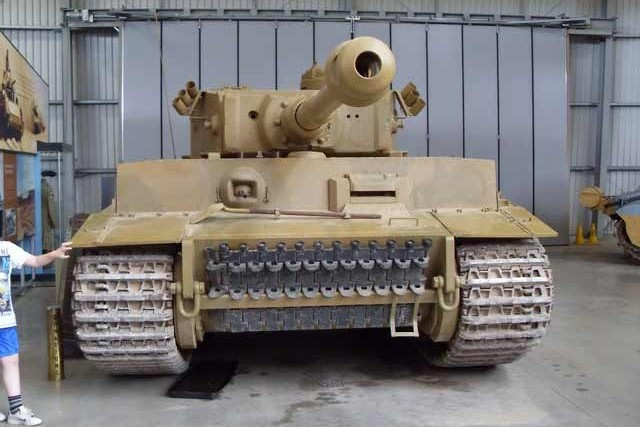
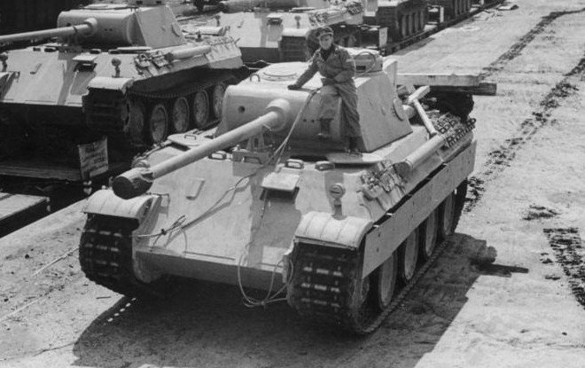
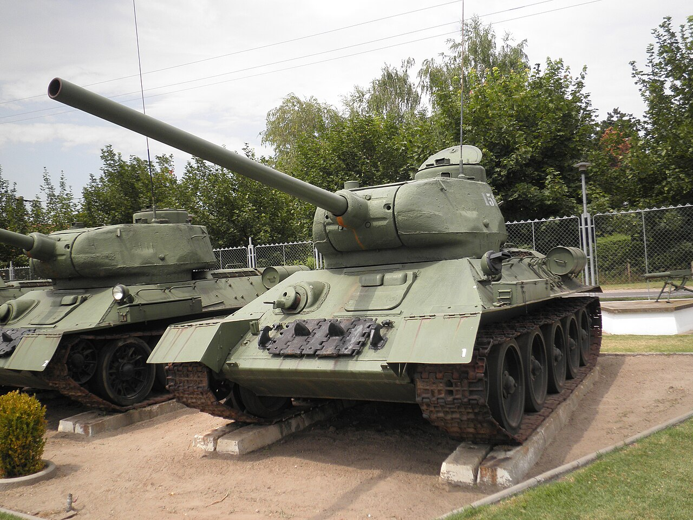
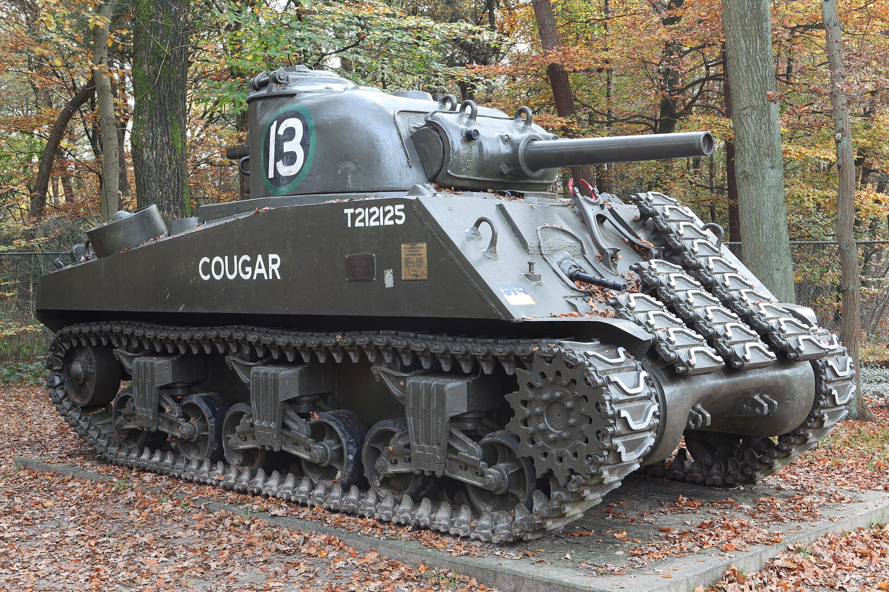

Tiger I
Một trong những xe tăng nổi tiếng nhất của Đức trong Thế chiến II.
Sự phát triển của xe tăng qua các mẫu tiêu biểu của Đức, Liên Xô và Mỹ.
Thế chiến II chứng kiến sự phát triển nhanh chóng của xe tăng. Các quốc gia tham chiến thử nghiệm nhiều cách kết hợp giữa giáp bảo vệ, hỏa lực và khả năng cơ động. Những thiết kế của giai đoạn này tạo nền tảng quan trọng cho xe tăng thời kỳ sau chiến tranh.
Các mẫu xe tăng nỗi tiếng của Đức.

Một trong những xe tăng nổi tiếng nhất của Đức trong Thế chiến II.

Thiết kế nổi bật với sự chú trọng đến giáp, pháo chính và khả năng cơ động.

Được sử dụng rộng rãi và đóng vai trò quan trọng trong nhiều giai đoạn của cuộc chiến.

Xe tăng hạng nặng của Đức, là mẫu phát triển tiếp theo của dòng Tiger trong giai đoạn cuối Thế chiến II.
Các mẫu xe tăng nỗi tiếng của Liên Xô.

T-34 và các biến thể được giới thiệu với thiết kế giáp nghiêng, khả năng cơ động và khả năng sản xuất với số lượng lớn.
Các mẫu xe tăng nỗi tiếng của Mỹ.

Xe tăng chủ lực của Mỹ trong phần lớn Thế chiến II, được sản xuất với số lượng lớn và được sử dụng bởi nhiều nước Đồng Minh.